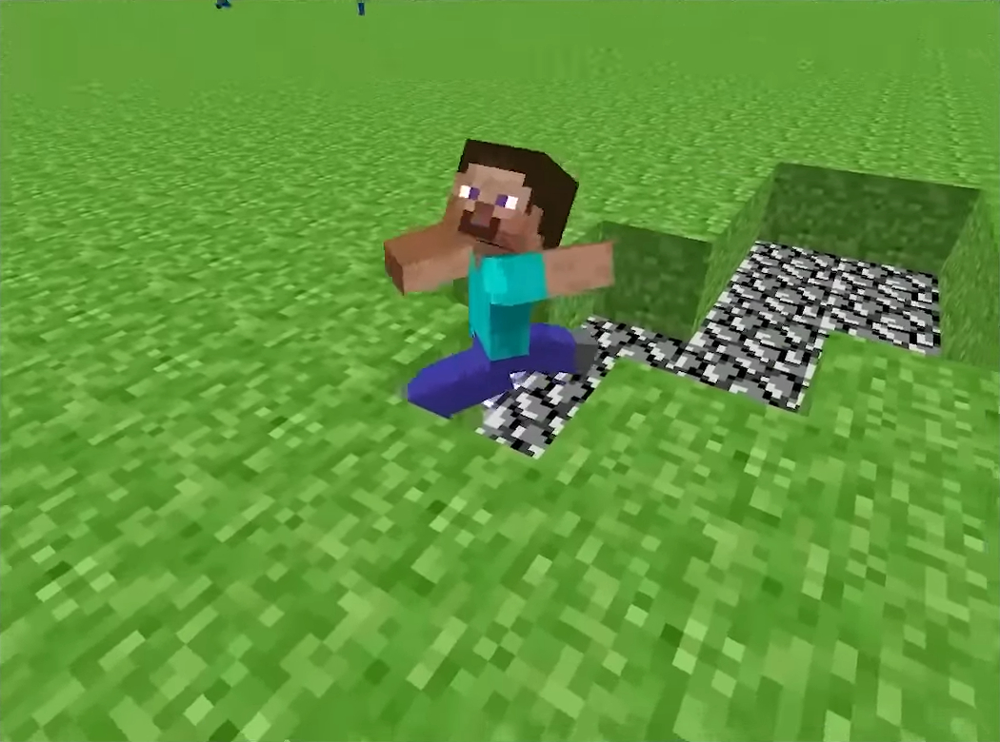

Первый день
Сразу добывай дерево, создавай верстак и базовые инструменты. До ночи обязательно подготовь укрытие и запас еды.

Пошаговый план для уверенного старта
Сразу добывай дерево, создавай верстак и базовые инструменты. До ночи обязательно подготовь укрытие и запас еды.

При спуске в шахту бери факелы и блоки для меток. Главный приоритет начала игры: уголь, железо и безопасный маршрут назад.

Собери стартовый набор: кирка, топор, печь, сундук и кровать. Этот комплект закрывает основные потребности первых игровых дней.

Ночью лучше оставаться в освещенном укрытии. Если выходишь наружу, держи дистанцию, используй щит и запасной путь отхода.